.jpg){kind=link}


_in_Lisbon,_Portugal_(55181048466).jpg){kind=link}


_%E2%82%AC1.40_(Forgot_the_name_of_the_tasty_pastry.)_Ponta_Delgada,_S%C3%A3o_Miguel,_Azores_(A%C3%A7ores)_Archipelago,_Portugal_(49028608628).jpg){kind=link}


.jpg){kind=link}


Lisbon
Heritage Lisboa Plaza Hotel
A family-owned Lisbon hotel just off Avenida da Liberdade, open since 1954 and part of Lisbon Heritage Hotels, with rooms in the historic city centre.
Check roomsOfficial hotel website · opens in a new tab
Europe / A place to get to know
Atlantic light, tiled streets and a soundtrack of fado

Welcome to Portugal
Portugal's Atlantic setting runs through its riverfront squares, maritime monuments and seafood cooking. Lisbon's hills, Coimbra's university and Madeira's irrigation paths offer distinct ways to explore.
Explore a little further
Landmarks, landscapes and the stories behind them. Select a photograph for a closer look.
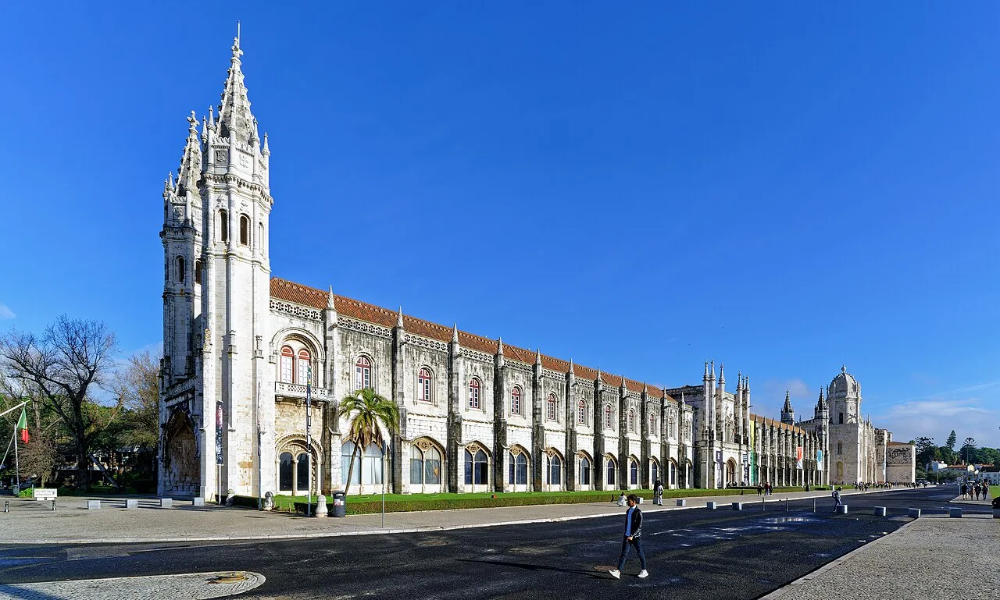
Commissioned by Manuel I in Lisbon's Belém district, this monastery is a major example of Manueline architecture. Its richly carved stonework reflects Portugal's early sixteenth-century royal patronage.
Holger Uwe Schmitt · CC BY-SA 4.0 . Resized as needed and converted to WebP. No crop.
This ornate defensive tower guarded the entrance to the Tagus estuary. Manueline decoration turns a former military bastion into one of Lisbon's most recognizable riverfront landmarks.
Rehman Abubakr · CC BY-SA 4.0 . Resized as needed and converted to WebP. No crop.
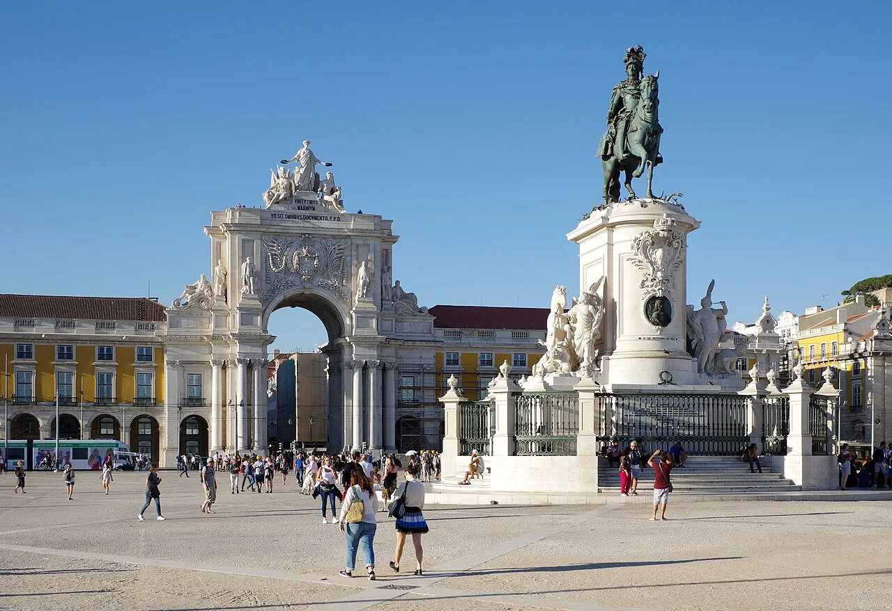
Opening toward the Tagus, this monumental square occupies the site of Lisbon's former royal palace. Arcaded buildings and a triumphal arch frame the rebuilt city center.
Berthold Werner · CC BY-SA 4.0 . Resized as needed and converted to WebP. No crop.
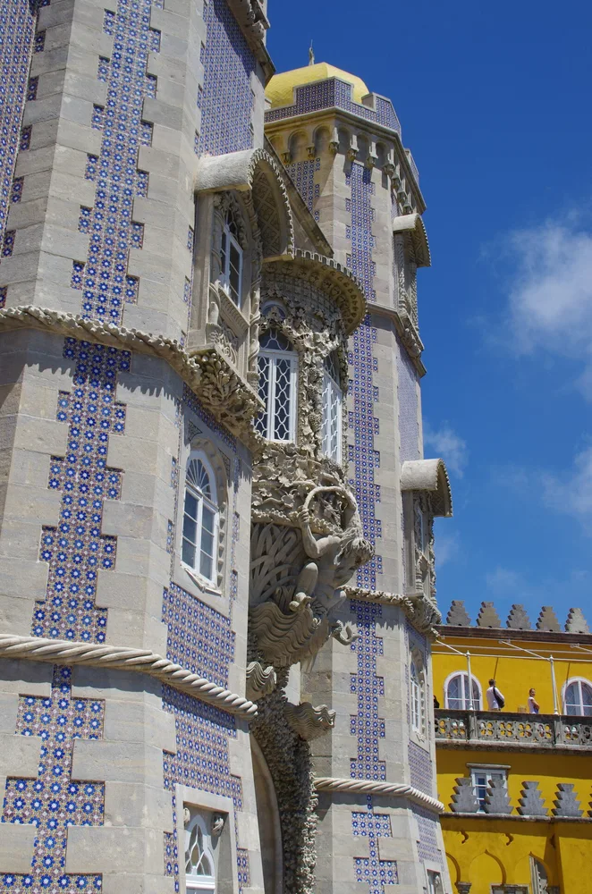
Above Sintra, this colorful nineteenth-century palace combines architectural revivals in a wooded hilltop setting. It occupies the site of an earlier monastery and expresses Romantic ideas about landscape.
Maitra · CC BY-SA 4.0 . Resized as needed and converted to WebP. No crop.
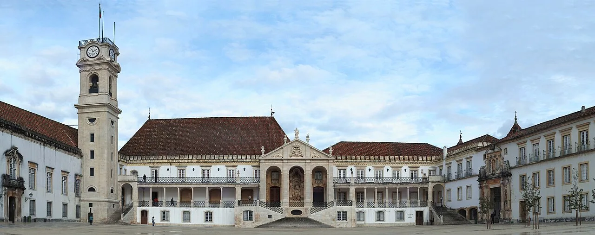
Founded in 1290 and permanently established in Coimbra in 1537, the university anchors the upper town. Its historic precinct includes the ornate Joanina Library and São Miguel Chapel.
Alvesgaspar · CC BY-SA 3.0 . Resized as needed and converted to WebP. No crop.
Explore a little further
Fado pairs expressive singing with guitar accompaniment and has deep roots in Lisbon's neighborhoods. The Fado Museum explores the music's history, while June festivities honor Saint Anthony.
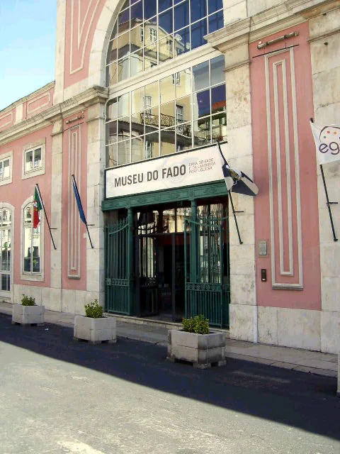
Fado Museum
pt:Usuário:nemracc · CC BY-SA 3.0 . Resized as needed and converted to WebP. No crop.
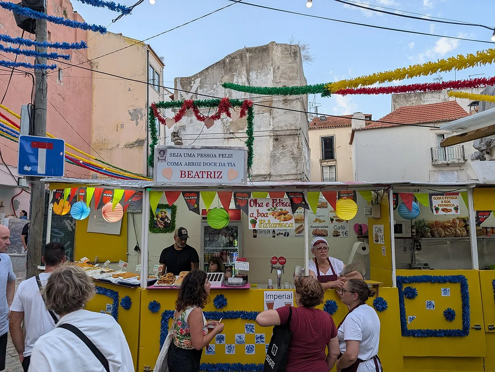
Feast of Saint Anthony Lisbon
Philip Mallis from Melbourne · CC BY-SA 4.0 . Resized as needed and converted to WebP. No crop.
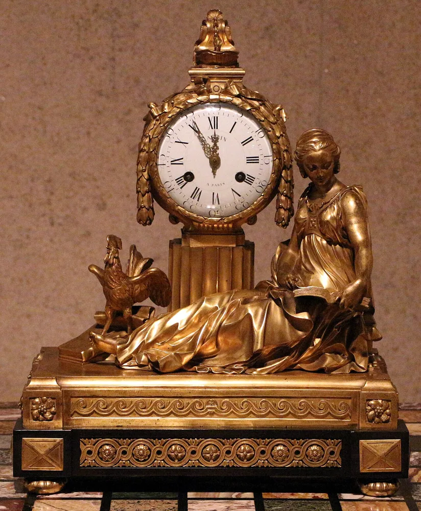
Calouste Gulbenkian Museum
Sailko · CC BY 3.0 . Resized as needed and converted to WebP. No crop.
Explore a little further
Portuguese tables bring together salted cod, leafy soups, Porto's hearty sandwiches and custard-filled pastries.
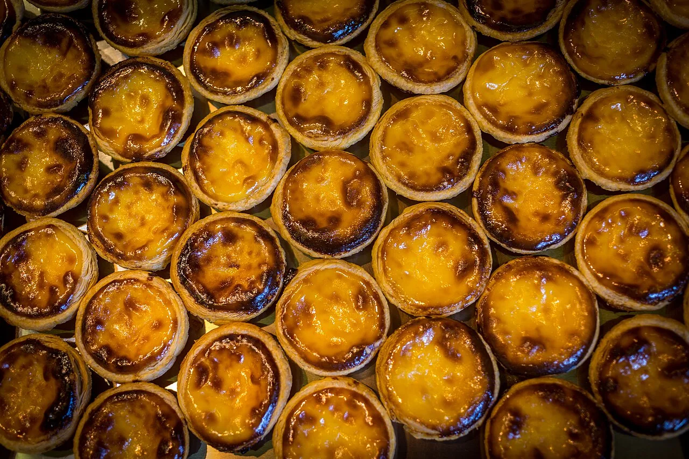
This small pastry has a crisp layered shell filled with baked egg custard and a lightly caramelized surface.
Photo Claude TRUONG-NGOC · CC BY-SA 3.0 . Resized as needed and converted to WebP. No crop.
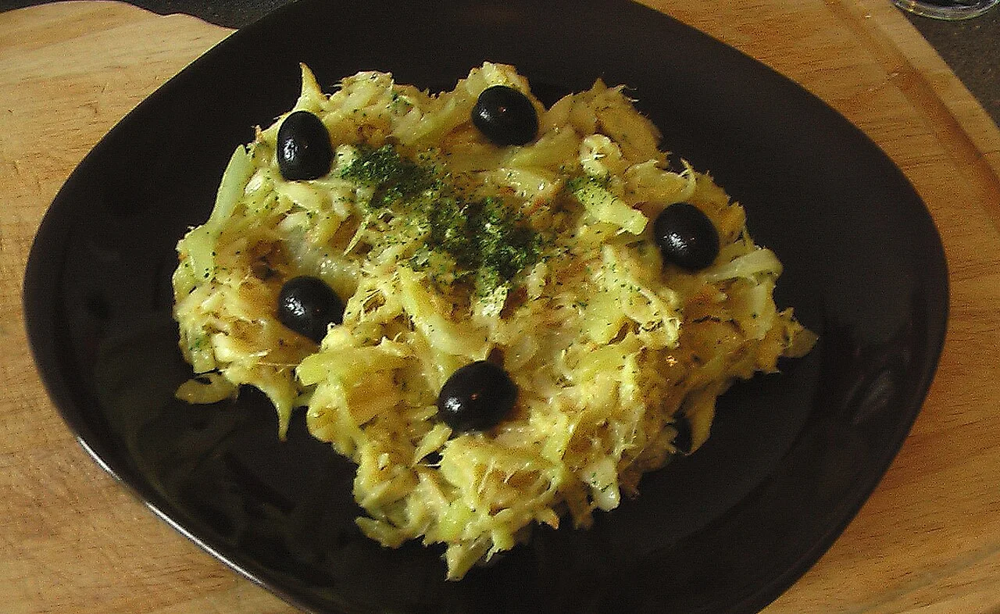
Shredded salted cod is mixed with finely cut fried potatoes, onion and eggs in this classic Portuguese dish.
Fpenteado at en.wikipedia · CC BY-SA 3.0 . Resized as needed and converted to WebP. No crop.
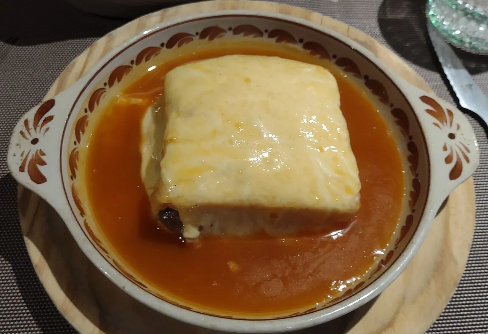
Porto's substantial sandwich layers meats under melted cheese and a hot tomato-and-beer sauce.
Ih8connecticut · CC0 . Resized as needed and converted to WebP. No crop.
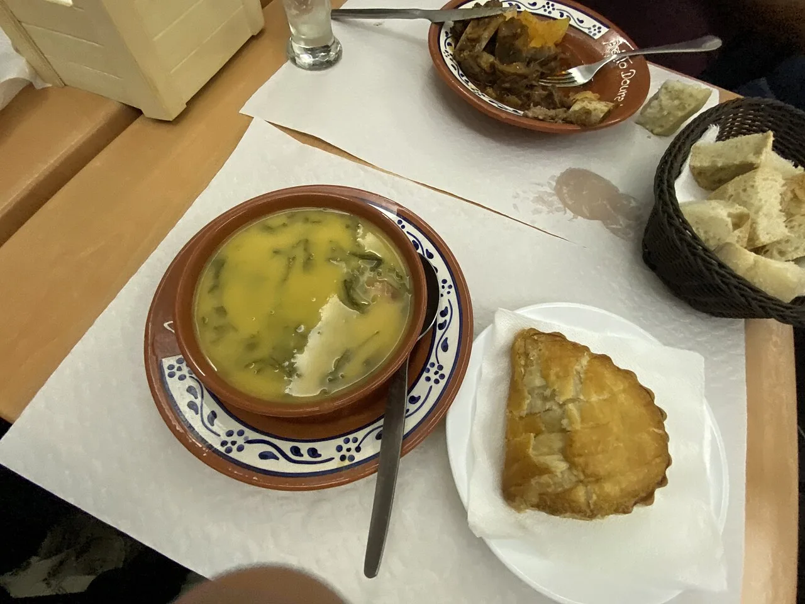
This comforting soup combines a potato base with finely shredded leafy greens and is often served with chouriço.
Sharon Hahn Darlin · CC BY 2.0 . Resized as needed and converted to WebP. No crop.
Explore a little further
Ride Lisbon's historic transport or follow open walking routes beside Madeira's levadas, the island's irrigation channels.
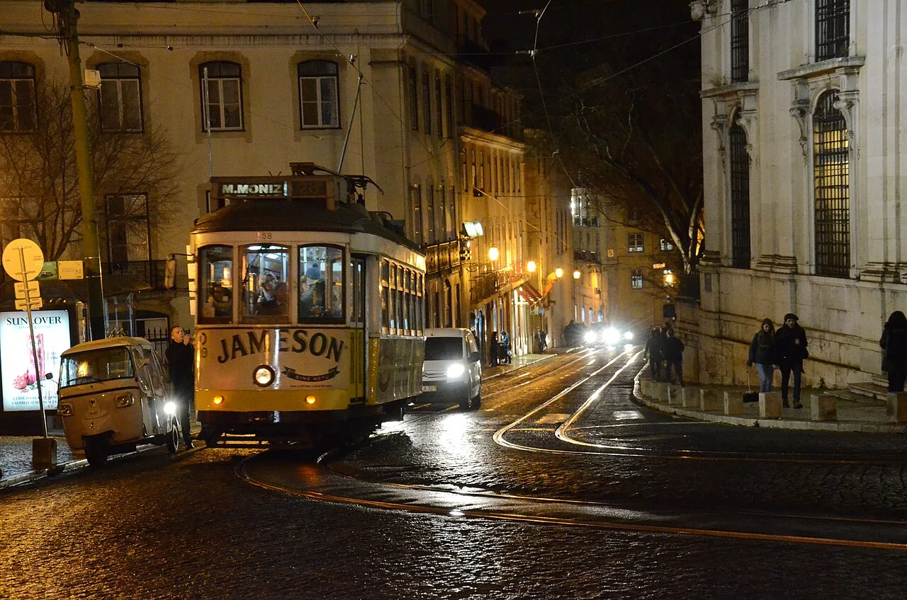
Ride the historic tram through hillside neighborhoods such as Graça and Alfama, watching tiled façades and narrow streets pass by.
Steven Lek · CC BY-SA 4.0 . Resized as needed and converted to WebP. No crop.
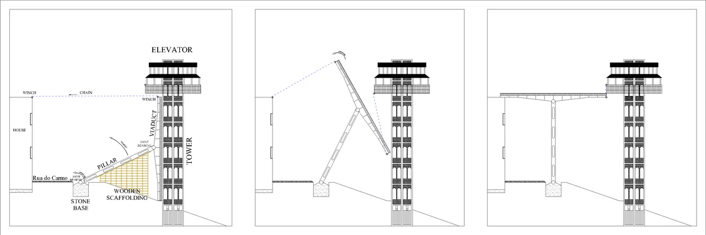
Experience the iron elevator linking Lisbon's lower streets with the Carmo area, and look across the rooftops from its elevated surroundings.
Nenea hartia · CC BY-SA 4.0 . Resized as needed and converted to WebP. No crop.
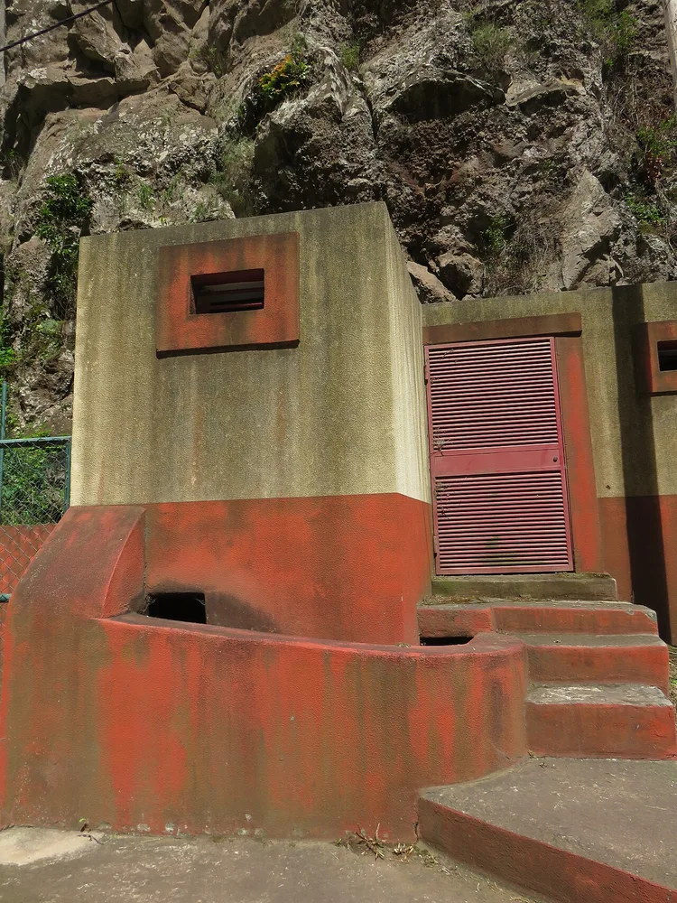
Walk designated paths beside Madeira's water channels for forest and mountain views, checking the official trail status and selecting a suitable open route.
PESP/ Wikimedia · CC BY-SA 4.0 . Resized as needed and converted to WebP. No crop.
Explore a little further
Lisbon's viewpoints, fado houses and Bairro Alto streets offer music, conversation and evening panoramas over the city.
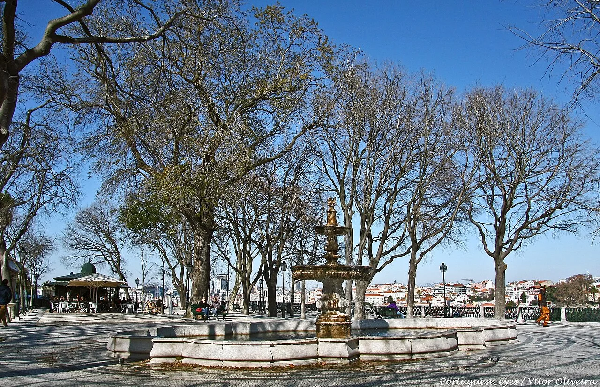
Miradouro de São Pedro de Alcântara
Vitor Oliveira from Torres Vedras, PORTUGAL · CC BY-SA 2.0 . Resized as needed and converted to WebP. No crop.
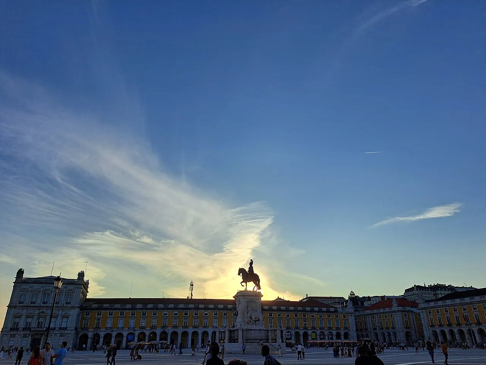
Praça do Comércio at night
Ives Nascimento · CC BY-SA 4.0 . Resized as needed and converted to WebP. No crop.
Explore a little further
A country overview with selected attraction markers. Use local transport information to plan the route between regions.
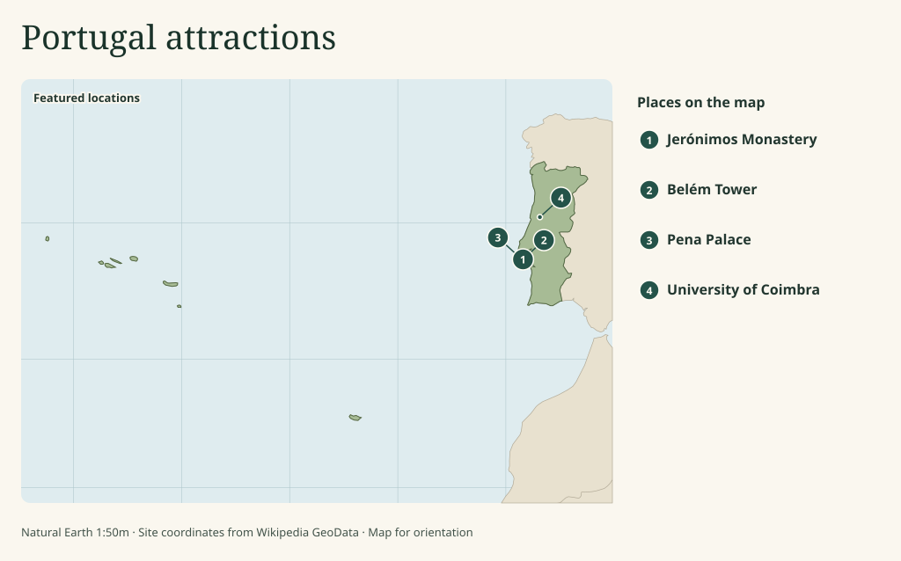
Illustrative overview. Marker locations and map sources are documented below.
A place to settle in
Two places to consider for your trip. Check room choices, current prices and availability directly with each hotel.
Lisbon
A family-owned Lisbon hotel just off Avenida da Liberdade, open since 1954 and part of Lisbon Heritage Hotels, with rooms in the historic city centre.
Check roomsOfficial hotel website · opens in a new tab
Lisbon
An Art Deco hotel in Lisbon near Avenida da Liberdade, with 35 rooms, restored period furnishings, a lounge, and a bar in a historic building.
Check roomsOfficial hotel website · opens in a new tab
The hotel sets its prices, booking terms and payment currency. Some properties confirm reservations after an enquiry.
Know your money
Get familiar with the local currency and estimate what an amount in your own currency is worth.
Daily reference Rates By Exchange Rate API . The rate date appears with your estimate.
Morning to evening · Portugal
Holger Uwe Schmitt · CC BY-SA 4.0 . Resized as needed and converted to WebP. No crop.
Rehman Abubakr · CC BY-SA 4.0 . Resized as needed and converted to WebP. No crop.
Berthold Werner · CC BY-SA 4.0 . Resized as needed and converted to WebP. No crop.
Vitor Oliveira from Torres Vedras, PORTUGAL · CC BY-SA 2.0 . Resized as needed and converted to WebP. No crop.
Suggested order and approximate times, with breaks for meals and travel. Confirm access, reservations, transport and operating hours locally. Evening photographs do not guarantee an event or performance.
Confirm arrangements with the official visitor resource .
Visitor resource: https://www.visitportugal.com/en
Guide: Atlas & Away · Portugal · researched 18 November 2026.
Explore a little further
A starter in European Portuguese. The pronunciation hints are approximate; listen to local speakers and ask politely when unsure.
| Phrase | Meaning | Say it approximately |
|---|---|---|
| Olá | Hello | oh-LAH |
| Por favor | Please | poor fuh-VOR |
| Obrigado / Obrigada | Thank you | oh-bree-GAH-doo / oh-bree-GAH-duh |
| Onde é a casa de banho? | Where is the restroom? | OHN-duh eh uh KAH-zuh duh BUH-nyoo |
| Bom dia | Good morning | bohm DEE-uh |
A little preparation
0 of 4 preparations complete
Saved places and checklists use this browser’s local storage. They are not an account or a booking.
Before you go
The example itinerary stays around Lisbon. The full country guide covers several regions; allow extra days and transport for places beyond that route.
Use the Hotels section to open a property’s official website and check rooms, prices and booking terms. You complete any reservation and payment with the hotel.
Open the enquiry page or email profannan712@gmail.com .
Guide researched on 18 November 2026. Text and code were developed with ChatGPT/Codex assistance for this student learning project.
Phrase reference: European Portuguese phrasebook .
Natural Earth (base data), ChatGPT in Codex (map design) · Public-domain Natural Earth base data . Projected Natural Earth boundaries, added labels and site markers, and exported SVG.